地政学
ニューデリーはインドの首都核で、中央政府、国会、最高裁、大使館、軍、報道が近接します。国内連邦政治と南アジア外交の判断が、儀礼道路、警備、会議、抗議、式典として都市に現れる場所でもあります。要所。
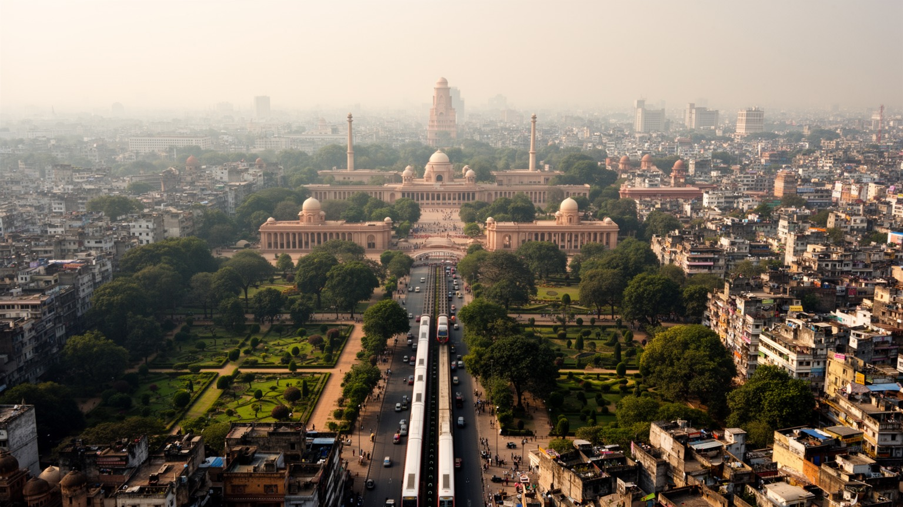
🇮🇳 インド / 首都地区 / World City Atlas
インド共和国の国家儀礼、中央行政、外交、報道、記念碑、庭園、官舎、市場が集まる首都の核です。整った軸線の背後で、旧デリーや周辺地区と結びついた濃い日常が続きます。
都市の骨格
ニューデリーは、ラージパトから大統領府、中央官庁、国会、インド門へ伸びる記念軸を持ちます。旧デリー、南デリー、外交街、官舎地区、商業地区が近接し、儀礼の都市と生活の都市が同じ平面で重なります。
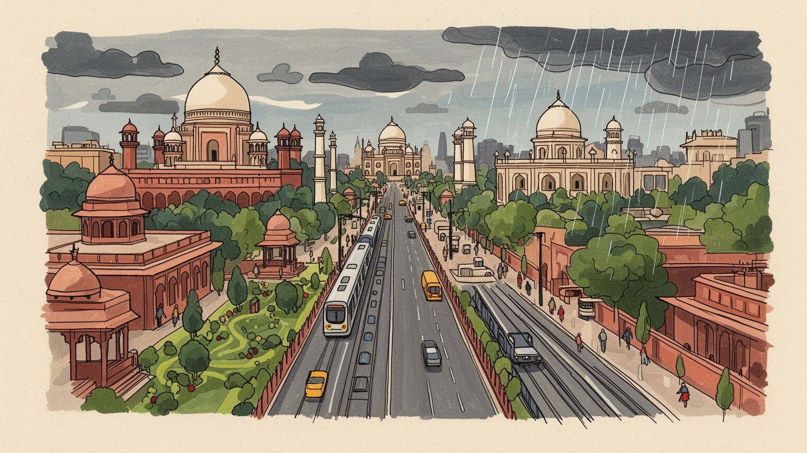
ニューデリーはインドの首都核で、中央政府、国会、最高裁、大使館、軍、報道が近接します。国内連邦政治と南アジア外交の判断が、儀礼道路、警備、会議、抗議、式典として都市に現れる場所でもあります。要所。
行政、外交、政策研究、報道、教育、観光、ホテル、警備、交通、清掃が主な雇用です。高位官僚と専門職だけでなく、運転手、家事労働者、庭師、配達員、露店商が首都の日常運営を支えています。雇用も多いです。
ヒンドゥー、イスラム、シク、ジャイナ、キリスト教の施設が短い距離にあります。国家式典、大学文化、美術館、食堂、市場、巡礼、移住者の記憶が重なり、首都は単一の権力空間に収まりません。議論も続きます。
旅行者はインド門、大統領府、国立博物館、ローディー庭園を巡ります。住民には通勤、家賃、暑さ、大気、治安、水、官庁街の規制が現実で、整った景観の外側に生活の厚みが広がります。暮らしの課題も見えます。
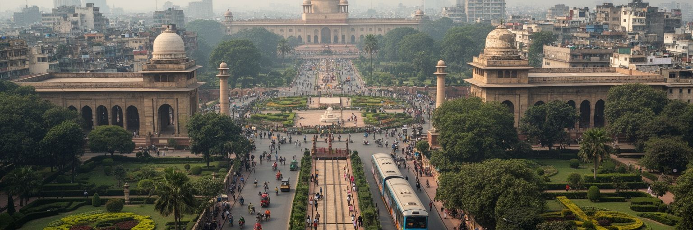
ニューデリーの中心を理解する入口は、ラージパトから大統領府、中央官庁、国会、インド門へ伸びる記念軸です。植民地期に設計された広い通り、対称的な建物、並木、芝生、視線の抜けは、かつて帝国の威信を見せるための空間でした。しかし独立後のインドは、その軸線を共和国記念日、追悼、外交儀礼、国民的祝祭の舞台として使い直しています。首都の空間は過去を消すのではなく、意味を上書きしながら働きます。観光客には壮大な景観として見える場所も、住民には交通規制、警備、散歩、写真撮影、デモの可否、暑い日の木陰として経験されます。広い芝生は公共空間に見えますが、国家儀礼のたびに立ち入りや動線が変わり、誰が近づけるのかを政治が決めます。近年の再整備は歩行者空間や記念施設の見せ方を変え、同時に歴史の呼び名や象徴の扱いにも議論を生んでいます。夕方に家族が散歩し、朝に職員が出勤し、式典前に警備線が張られる光景を重ねると、同じ場所が市民の余暇、国家の舞台、権力の境界を兼ねていることが分かります。名称や記念碑の扱いも、国家が過去をどう語るかを住民に問いかけます。子どもの遠足や地方からの訪問者も、ここで国家を身体的に学びます。ニューデリーの首都軸は、建築の美しさだけでなく、権力がどのように見られ、歩かれ、警備され、時に市民に開かれるかを示す都市の読み取り線です。
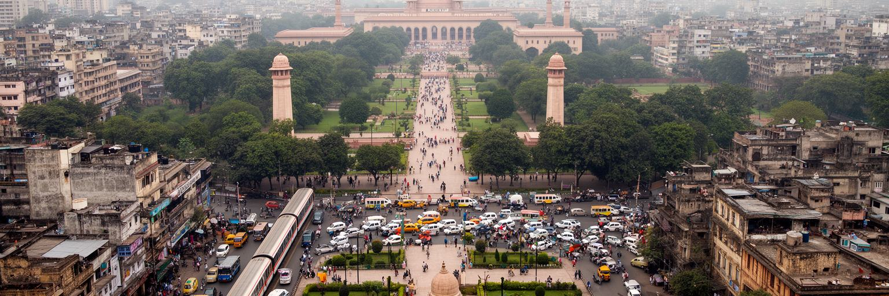
ニューデリーには中央省庁、国会、首相府、大統領府、最高裁、選挙機関、政策研究機関、国営メディア、全国紙、政党事務所が近くに集まります。インドは人口、言語、宗教、州、カースト、産業構造が大きく異なる連邦国家であり、首都での一つの決定は遠い農村、港湾、IT都市、国境地帯、学生、労働者へ波及します。官庁街の落ち着いた外観の内側では、予算、補助金、インフラ、農業価格、教育、司法、治安、外交、気候政策をめぐる調整が続きます。首都は制度の中心であると同時に、請願者、活動家、記者、州政府関係者、企業、労働組合が集まる交渉の場でもあります。道路封鎖や警備の強化は、市民に政治の距離を体感させます。議会会期中には宿泊、印刷、配車、通訳、食堂、警備、報道の仕事が増え、政策の季節が都市経済にも現れます。地方から来た人が窓口を探し、記者が発表を待ち、職員が分厚い書類を運ぶ日常は、巨大国家の制度が抽象物ではないことを示します。小さな告示や予算配分も、遠い州の学校、病院、道路、配給の条件を変えます。首都で見えない人の暮らしほど、政策の結果を強く受けることもあります。ニューデリーの行政性を読むには、建物の威厳よりも、政策の言葉が誰の生活へ届き、誰の声が首都まで届くのかを見る必要があります。制度は紙の上だけでなく、待合室、記者会見、抗議の列、通勤する職員の一日によって動きます。
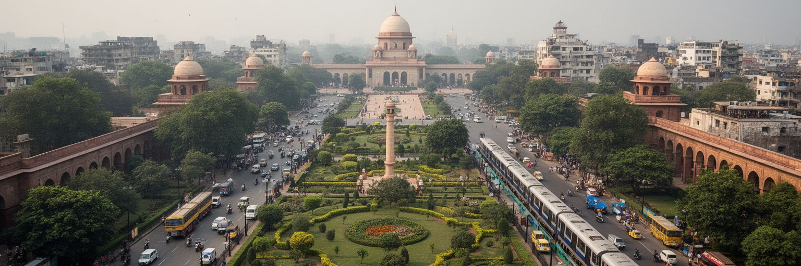
チャーナキャプリを中心とする外交街は、ニューデリーを世界政治の地図に置きます。各国大使館、国際機関、文化センター、学校、ホテル、会議場、警備施設が並び、インドの対外関係が日常業務として処理されます。南アジアの国境問題、インド洋、エネルギー、気候、移民、技術協力、開発援助、軍事演習、ビザ、留学、商談は、こうした街区の会議室とレセプションで動きます。外交街は静かで緑が多く見えますが、その静けさは警備、通訳、運転手、清掃、庭師、調理、ホテル労働、通信の仕事に支えられます。首脳訪問や国際会議がある日は、空港から官庁街までの道路、宿泊、交通規制、報道が一斉に変わります。ニューデリーの外交性は、世界的な大国としてのインドの存在感だけでなく、周辺国との複雑な近さにもあります。留学生の手続き、文化祭、映画上映、奨学金説明会、商工会の会合も外交街の柔らかな顔です。厳重な塀の内側で進む交渉と、外側で働くサービス労働者の通勤は、国際関係が都市の生活費や交通にも関わることを示します。短い移動で異なる国旗や言語に出会える点も、この街区の独特な日常です。ここでは地政学が抽象的な地図ではなく、ビザ窓口の列、警備された塀、文化イベント、会議後の食事として都市に現れます。外交街を歩くと、首都が国内政治の中心であると同時に、世界と交渉する窓でもあることが分かります。
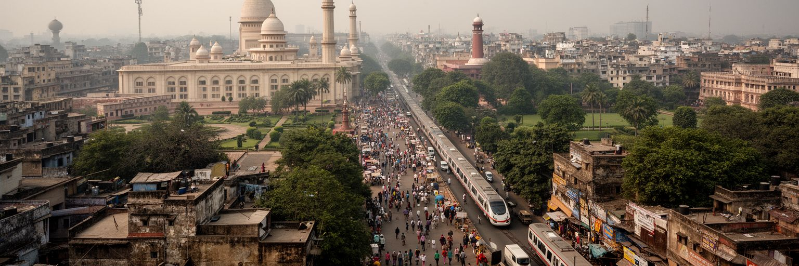
ニューデリーはしばしば、広い道路と官庁建築を持つ整った首都として語られます。しかしその都市性は、北側にある旧デリーの市場、宗教施設、駅、卸売、食堂、職人街と切り離せません。旧市街はムガルの都シャージャハーナーバードの記憶を残し、チャンドニー・チョークやジャーマー・マスジド周辺では、香辛料、布、金物、宝飾、菓子、書籍、修理、屋台、配達が細い路地で続きます。ニューデリーの官庁やホテルが必要とする商品、労働、食、交通の一部は、こうした古い商業網から届きます。反対に、旧市街の商人や住民も、首都の政策、観光、交通整備、警備、再開発の影響を強く受けます。二つの都市は景観も密度も違いますが、労働と移動では深く結びついています。鉄道駅から着いた移住者、婚礼用品を仕入れる家族、官庁街へ弁当を運ぶ人、観光客を案内する運転手は、二つの都市を毎日往復します。メトロは距離を縮めましたが、階層や混雑の差を消したわけではありません。祭礼や婚礼の季節には、旧市街の商いが首都全体の時間を変えます。ニューデリーだけを見ていると、首都が清潔で秩序ある空間として完成しているように見えます。しかし実際には、旧市街の混雑、家族商店、宗教暦、低賃金労働、鉄道駅の流入が、首都の日常を支えるもう一つの基盤です。首都の理解には、軸線と路地を同時に読む視線が必要です。
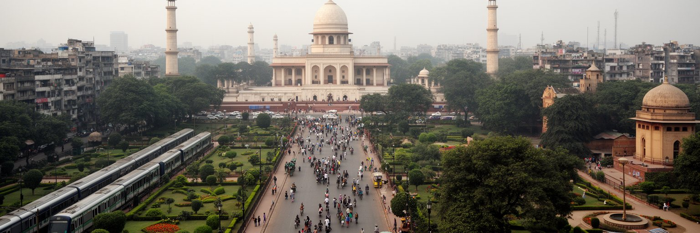
ニューデリーの宗教生活は、国家の中心という硬い印象を和らげます。ラクシュミー・ナーラーヤン寺院、グルドワラ・バングラ・サーヒブ、教会、モスク、ジャイナ寺院、霊廟、墓地、路地の祠が近くにあり、礼拝、食事の奉仕、祭礼、結婚、葬送、家族訪問が都市の時間を作ります。シク教のランガルでは多くの人が食事を受け取り、ヒンドゥーの祭りやイード、クリスマス、グルプラブの時期には、交通、商店、音、装飾、人の流れが変わります。宗教は観光名所である前に、移住者が都市で頼る共同体であり、病気や失業、孤独を支える相談の場でもあります。同時に、インドの首都で宗教が公共空間に現れることは、政治的な緊張と無縁ではありません。警備、噂、共同体間の不信、選挙の言葉は、祈りの場所の周囲にも影を落とします。礼拝施設の周囲には花売り、靴を預かる人、食事を作る人、寄付を集める人、混雑を整理する人がいて、信仰は多くの小さな仕事も生みます。祭礼の日の渋滞や音は負担にもなりますが、都市に暦と記憶を与えます。家庭の祈りや職場近くの小さな参拝も、巨大都市で心を落ち着かせる日常の技術です。だから宗教を読むには、建築の華やかさだけでなく、誰が安心して訪れ、誰が食事を得て、誰が祭礼の混雑を支えるのかを見る必要があります。ニューデリーの祈りは、国家の都市を生活の都市へ戻す力も持っています。
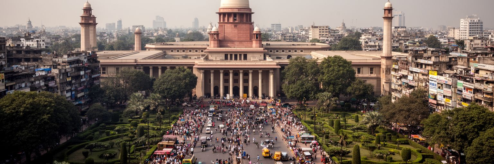
コンノートプレイスは、ニューデリーの商業と都市生活を読む重要な場所です。白い列柱の円形街区には、銀行、書店、レストラン、映画館、ブランド店、旅行会社、屋台、地下鉄駅、オフィスが集まり、官庁街とは異なる首都の顔を見せます。植民地期の商業地区として計画された空間は、現在では若者の待ち合わせ、観光客の買い物、会社員の昼食、夜の飲食、地下鉄乗り換えの結節点になっています。整った外観の裏側では、賃料の高さ、歩道の占有、露店の取り締まり、清掃、警備、配達、地下空間の混雑が日常的な課題です。商業地区は中産層や旅行者に開かれているように見えますが、そこを支える清掃員、警備員、調理人、販売員、運転手は遠くから通い、長い労働時間を抱えることも多いです。地下街や周辺道路では、値引きを求める客、スマートフォンで配達を受ける人、夜遅く店を閉める人が混ざり、公式な店舗と小さな非公式経済が接しています。家賃が上がれば古い店は残りにくくなり、都市の記憶も変わります。コンノートプレイスを歩くと、首都の消費文化とサービス労働が同じ円形道路の中に重なっていることが分かります。地下鉄の駅から地上へ出る人の流れは、ニューデリーが自動車の都市だけではなく、公共交通と徒歩によって毎日作り直される都市であることを示しています。商業の輝きは、見えにくい労働の蓄積で保たれます。
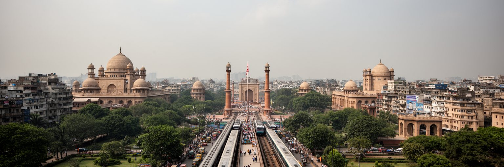
ニューデリーの移動は、記念軸の広い道路だけでは説明できません。地下鉄、バス、オートリキシャ、配車アプリ、徒歩、自転車、官用車、警備車列が、同じ都市空間を異なる速度で使っています。デリー・メトロは旧デリー、中央官庁、コンノートプレイス、南デリー、空港、ノイダ、グルガオン方面を結び、通勤と観光の距離を大きく縮めました。駅の検査、女性専用車両、カード決済、乗り換え通路、駅前の露店や待機車両は、首都の日常的な移動を形づくります。一方で、駅から先の歩道、日陰、夜の安全、障害者の利用、バス接続、運賃負担はまだ都市の差を映します。政府地区の道路は広くても、式典や抗議、外国要人の訪問で突然閉じられることがあり、政治が移動時間を左右します。空港や鉄道駅へ向かう旅行者と、郊外から官庁や商店へ通う労働者は同じ路線を使いますが、荷物、時間、費用、安全への不安は異なります。暑い時期には駅までの数百メートルも負担になり、歩道の途切れや横断の難しさが移動の質を決めます。通勤は単なる交通問題ではなく、家賃の安い場所に住む人が、どれだけ早く安全に仕事へ届けるかという生活問題です。ニューデリーの交通を読むと、首都の秩序は道路幅だけでなく、歩ける歩道、信頼できるバス、暑さを避ける木陰、夜でも帰れる安心によって測られることが分かります。
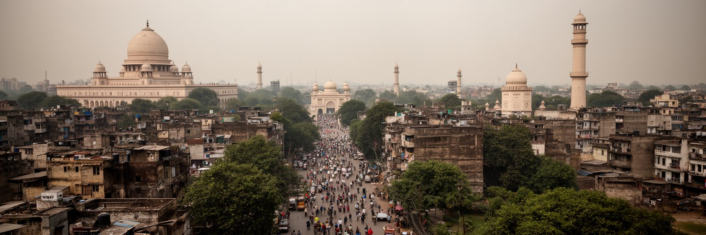
ニューデリーの住まいは、首都の階層をはっきり映します。広い官舎、外交官住宅、高級アパート、緑の多い区画、歴史的なバンガローがある一方で、サービス労働者、運転手、家事労働者、警備員、庭師、露店商、建設労働者は、より遠い地区や密度の高い住宅地から通うことが多いです。中心部の土地は国家機関や公共施設に使われ、住める人が限られるため、首都の仕事を支える人ほど長い移動と高い家賃に向き合います。再開発、緑地保全、警備、都市美化は必要な面もありますが、低所得者の居住や露店の場所を押し出すことがあります。住所が不安定なら、学校、医療、配給、投票、雇用の手続きにも影響します。官舎の庭を手入れする人が自宅では十分な水を得られない、官庁へ車で通う人と同じ道路を清掃員が早朝に歩くという対照は、首都の不平等を具体的に見せます。住まいの遠さは睡眠、子育て、学習、医療にも響きます。首都らしい景観の背後には、誰が近くに住めるのか、誰が遠くから通わざるを得ないのかという政治があります。ニューデリーを公平な都市として考えるには、官庁街の整然さだけでなく、都市を掃除し、運転し、料理し、守る人の住まいを見なければなりません。住宅は個人の問題ではなく、首都機能を支える基礎インフラです。働く人が尊厳を保って住めるかが、都市の公共性を決めます。
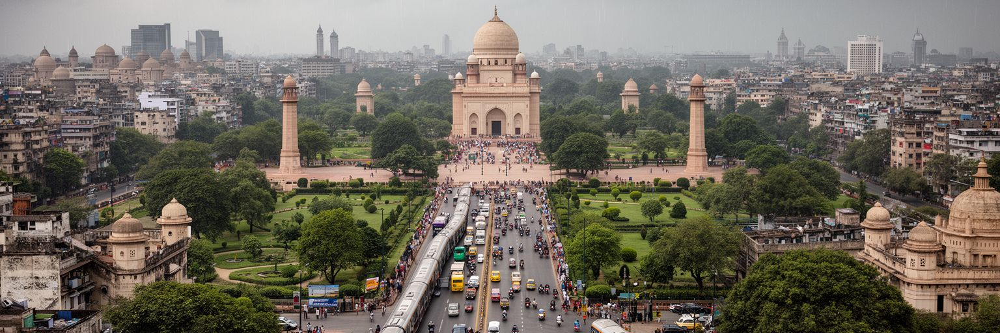
ニューデリー観光は、古代遺跡だけでなく、近代国家の空間を歩く体験です。インド門、大統領府周辺、国会地区、国立博物館、ローディー庭園、コンノートプレイス、ガンディー関連の記念施設、近隣のフマユーン廟やクトゥブ・ミナールへの動線が、帝国、独立、共和国、宗教、庭園文化を結びます。旅行者は写真に残る壮大な景観を求めますが、その周囲ではガイド、警備員、清掃員、露店、運転手、博物館職員、修復関係者が働いています。遺産は静かな石や芝生ではなく、入場料、警備、修復、混雑、暑さ、交通、周辺住民の暮らしと一体です。記念碑は国家の統一を語りますが、訪れる人の出身地、言語、宗教、所得によって受け止め方は変わります。博物館の展示や記念施設は、独立運動、分離独立、軍事、民俗、芸術をどのように語るかを選び、都市の歴史認識を形づくります。観光バスの窓から見える整った景観だけでは、周辺の屋台や清掃、日陰を探す人の時間は見落とされがちです。ニューデリーの観光を深く見るには、名所を順番に消費するだけでなく、なぜその記念碑がそこにあり、誰が維持し、誰の歴史を語っているのかを考える必要があります。朝夕の庭園、博物館の展示、式典前の準備、市民の散歩を重ねると、首都の遺産が観光客だけでなく住民の日常にも使われていることが分かります。
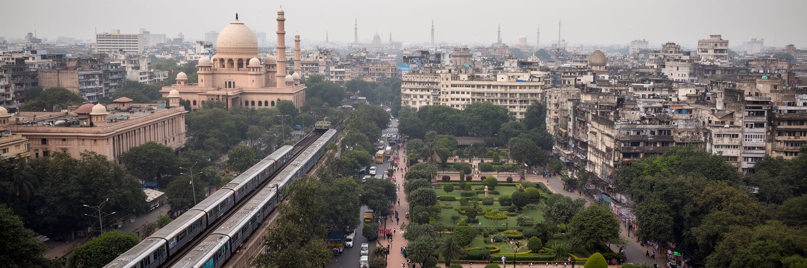
ニューデリーの環境リスクは、大気汚染、酷暑、水、廃棄物、洪水が重なって現れます。冬には車両排出、建設粉じん、周辺農地の焼却、気象条件、霧が重なり、学校、病院、屋外労働、観光、通勤へ影響します。夏の熱波は、冷房のある官庁やホテルと、屋外で働く警備員、配達員、露店商、建設労働者、清掃員の差を広げます。モンスーンの雨は浸水や交通の混乱を起こし、水不足や地下水の問題も住民の生活に触れます。環境問題は抽象的な政策ではなく、子どもの咳、休校、空気清浄機の購入、医療費、日中の作業時間、飲み水の確保として現れます。緑の多い首都中心部でさえ、都市圏全体の排出や気象から逃れられません。大使館街や庭園の木陰は貴重ですが、屋外で働く人には休憩場所、飲料水、粉じん対策、暑熱時の労働調整が必要です。川や排水路の管理が弱ければ、豪雨時の浸水と衛生問題はすぐに生活へ戻ります。空気の悪い日には、観光の楽しみも通学も屋外運動も制限され、都市の自由が小さくなります。ニューデリーが世界的な首都であり続けるには、記念碑や官庁の美しさだけでなく、息をし、歩き、水を飲み、暑さを避けられる公共環境を整える必要があります。木陰、公共交通、粉じん管理、涼める施設、清潔な水場は、都市の健康と公平性を守る基礎です。環境政策は首都の見栄えではなく、生活の安全そのものです。
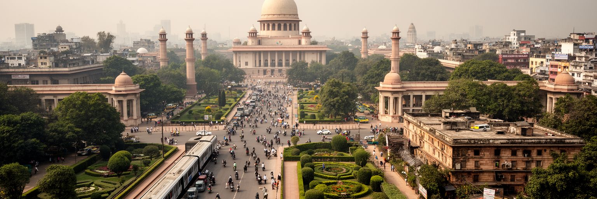
ニューデリーを世界都市として読む理由は、人口規模だけではありません。ここには、植民地期に設計された権力の軸線、独立後の共和国儀礼、中央行政、外交街、大学文化、宗教施設、商業地区、地下鉄、官舎、周辺の労働者住宅、大気と暑熱のリスクが、短い距離の中に重なっています。金融や港湾で世界と結びつく都市とは違い、ニューデリーの核心は、国家を代表し、調整し、記憶し、時に統制する機能にあります。しかし首都は制度だけでは動きません。清掃する人、警備する人、食堂で働く人、車を運転する人、学生、記者、露店商、遠くから通う家事労働者が、毎日の運営を支えています。インド門の広い芝生と旧市街の路地、外交街の静けさとコンノートプレイスの混雑、博物館の展示と冬のスモッグを一緒に見ると、都市の力と負担が同時に見えます。さらに、首都の象徴をめぐる改名、再整備、記念碑の解釈、抗議の場所の制限は、都市空間が常に政治的に作り直されていることを示します。世界へ向けた公式の顔と、住民が水、家賃、交通、大気に向き合う日常は、同じ都市の二つの側面です。ニューデリーを理解することは、インドが自分を世界へどう見せたいのか、そしてその首都空間を住民がどう使い、支え、問い直しているのかを読むことです。国家の顔と生活の現場を切り離さない時、この都市の厚みが見えてきます。